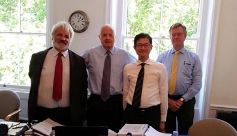
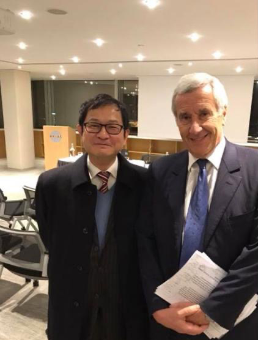
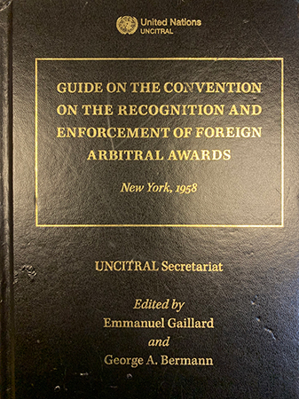
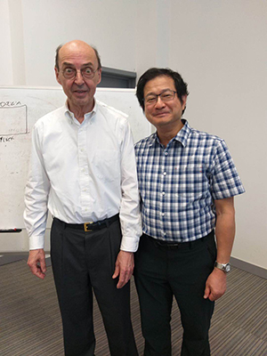

|  2014年，在英國皇家仲裁師學會的倫敦總部進行的一起按英國倫敦海事仲裁協會仲裁規則的仲裁案: Stewart Boyd QC (最左); Michael Thomas QC; SC (左邊第二位); 我所梁景威律師（左邊第三位）；Peter Buchan(最右邊) |
 在2018年2月12日，Emmanuel Gaillard教授與梁景威律師在香港國際仲裁中心 |
  在2018年2月12日，Emmanuel Gaillard教授在香港國際仲裁中心提交書獎給梁景威律師 |
 在2019年5月22日，Albert van den Berg教授與梁景威律師。 |